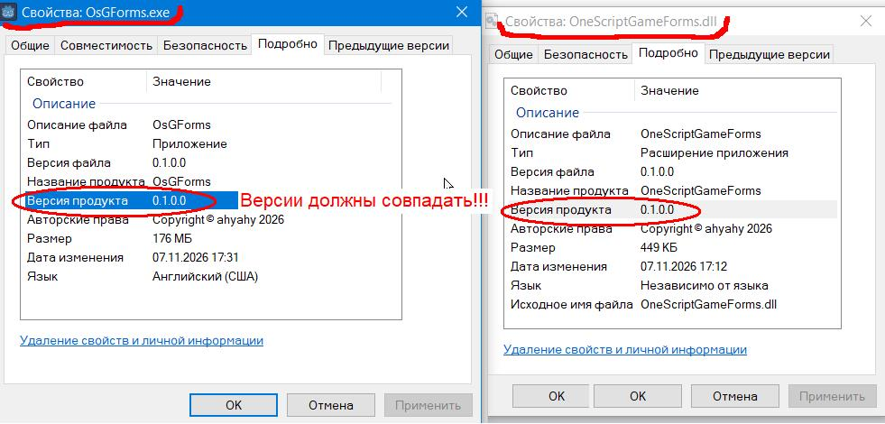

OneScript - ведущий
Прежде всего нам нужен OneScript.
Ознакомьтесь со статьей на ресурсе infostart.ru - Как решать повседневные задачи с помощью OneScript здесь
Скачайте и установите 1Script - язык сценариев для специалистов по 1С (сайт) здесь
Godot - ведомый
Приложение Godot, которым будет управлять сценарий односкрипта, уже заготовлено и состоит из одного файла OsGForms.exe. Это шаблон с минимальным наполнением, создан в редакторе Godot и экспортирован в виде исполняемого файла. Шаблон содержит скрипты на языке C#, которые осуществляют взаимодействие со сценарием через каналы stdin-stdout. Пропускная способность достаточна для работы с GUI элементами. Для игр 2D-3D будет использоваться связь на основе сокетов, здесь скорость передачи требуется более быстрая. Оба типа взаимодействия будут осуществляться одновременно.
Все элементы управления и обслуживающие их классы создаются динамически по командам сценария.
Файл OsGForms.exe вы найдете в репозитории библиотеки.
Возможно будет необходимо правой кнопкой мыши вызвать свойства файла, найти соответствующий флажок и разблокировать файл.
Это зависит от настроек вашей операционки.

Для разных платформ нужен свой экспортированный шаблон.
Так как требуется согласованный выпуск сборки шаблона (OsGForms.exe) и библиотеки OneScriptGameForms.dll прошу обратить особое внимание на
совпадение их версий. Откройте свойства обоих файлов, перейдите на вкладку Подробно и сверьте их значения Версия продукта.
Сценарий
Итак, у нас есть:
Остается написать сценарий и запустить его.
Используйте следующий код:
Код Код Код Код
// ........
Код Код Код
Текст Текст Текст Текст
Текст Текст Текст Текст Текст Текст Текст Текст Текст Текст
Текст Текст Текст Текст: